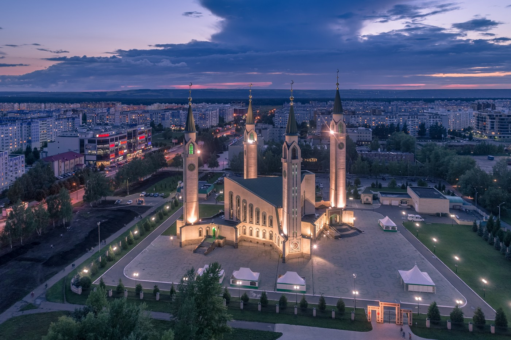
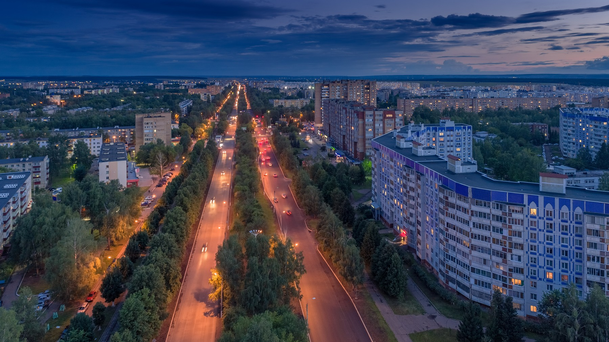
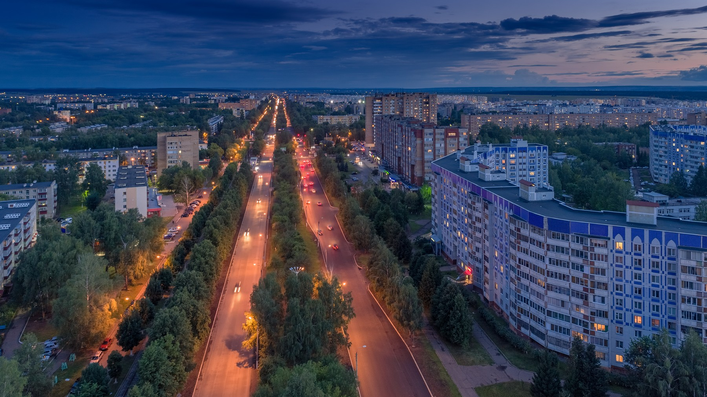
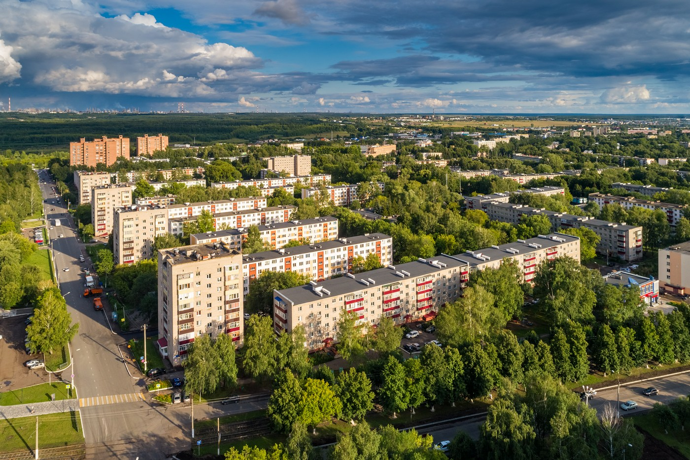
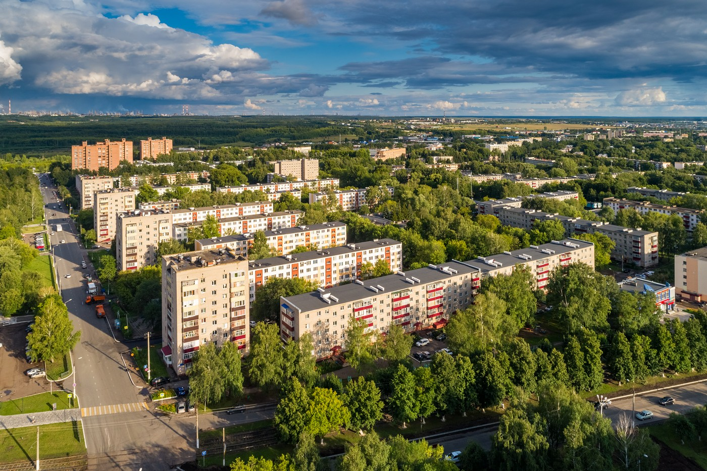
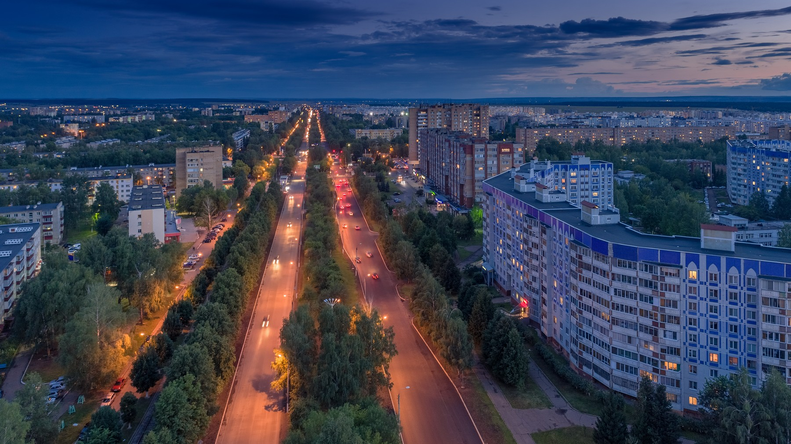
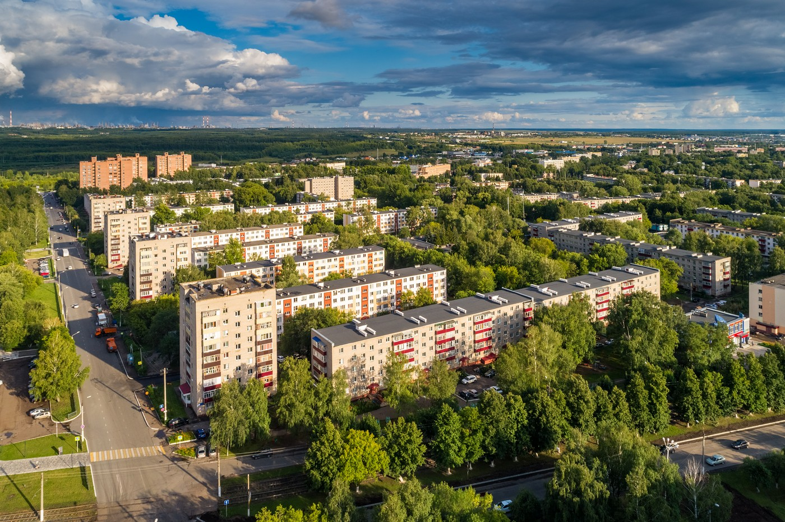
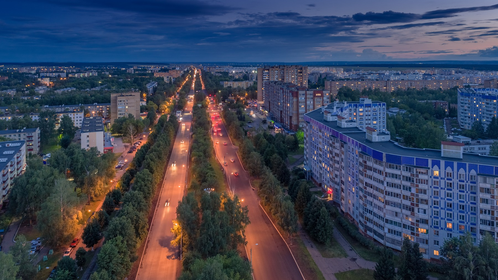
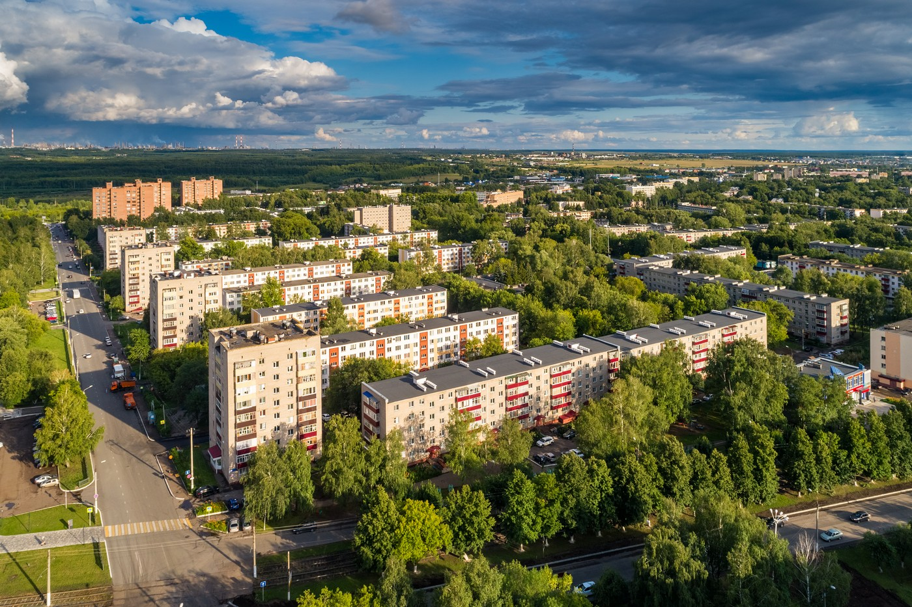

Нижнекамск

 

 






8 мая года Совет Министров СССРпринял Постановление «О списке строек, вновь начинаемых проектированием в 1958 году». 23 июля 1958 года ЦК КПСС и Советом Министров СССР принято Постановление «Об ускорении производства искусственных и синтетических волокон, пластических масс и других синтетических материалов и изделий для удовлетворения потребностей населения и нужд промышленности в 1958—1965 годы». Этими документами был утверждён проект создания в северо-восточной части Татарской АССРНижнекамского промышленного района. Планировалось построить крупнейший в Европе нефтехимический комплекс, который должен был перерабатывать нефть, добывавшуюся на юго-востоке ТАССР(см., например, Ромашкинское нефтяное месторождение) и производить новые виды пластических масс, синтетических каучуков, а также другое углеводородное сырьё для дальнейшей химической переработки.
В соответствии с проектом районной планировки Нижнекамского промышленного района коллективом Государственного ордена Трудового Красного Знамени института проектирования городов (Гипрогор) в 1959 году был создан генеральный план города на расчётную численность 170 тысяч человек. Автором генплана являлся В. А. Пашков, руководителем работ — Е. И. Кутырев. Разработанный ими генплан Нижнекамска был удостоен в 1960 году Диплома I степени и Золотой медалиВДНХ СССРна Всесоюзном смотре-конкурсе проектов новых городов.
25 декабря 1960 года в район села Афанасово прибыли первый, а 2 января 1961 года второй санно-тракторные поезда с энтузиастами-первостроителями. Возник посёлок строителей, рядом (в 6 км к юго-востоку от деревни Соболеково в районе лесного массива) развернулась грандиозная стройка энергетического блока и химкомбината. Ей был присвоен статус Всесоюзной ударной комсомольской стройки.
19 апреля 1961 года Указом Президиума Верховного Совета Татарской АССР зарегистрирован вновь возникший населённый пункт Афанасьевского сельсовета Челнинского района ТАССР с присвоением ему наименования Нижнекамский. Его население составляло около 500 человек.
В 1962 году Гипрогором был разработан технико-экономический доклад (ТЭД) развития производственных сил Татарской АССР, а в 1965 году — проект районной планировки Набережно-Челнинского промрайона, которыми предусматривалось дальнейшее развитие комплекса предприятий Нижнекамского промузла с включением дополнительного ряда новых производств. Эти документы определили расчётную численность населения города Нижнекамска в 250 тысяч человек.
В апреле 1964 года был заложен фундамент первого жилого многоквартирного дома, а уже через два года население города достигло 30 тысяч человек. Темпы строительства и пафос созидания нового города вдохновили композитора А. Пахмутову и поэта Н. Добронравова на песню о строителях новых городов «Смелость города берёт».
12 января 1965 года путём выделения его из состава Челнинского и Шереметьевского районов был образован Нижнекамский район ТАССР.
22 сентября 1966 года рабочему посёлку Нижнекамский был присвоен статус города. Он был назван Нижнекамском. Этот день считается официальным днём рождения города, хотя празднование дня города в последнее время проводятся 30 августа в День Республики Татарстан.

Олимп – это 6 этажей шоппинга,
развлечений и ресторанов для
всей семьи, а так же удобная
подземная парковка с
автомойкой. Олимп относится к рубрикам:
детские спортивные секции.
Вы можете узнать всю интересующую вас
информацию, позвонив по телефону
+7 (917) 898-80-66.
Суперрегиональный многофункциональный комплекс
Рамус молл – один из крупнейших проектов в
республике Татарстан и самый крупный проект
в городе Нижнекамск. Город Нижнекамск
это крупнейший центр нефтехимической
промышленности России.